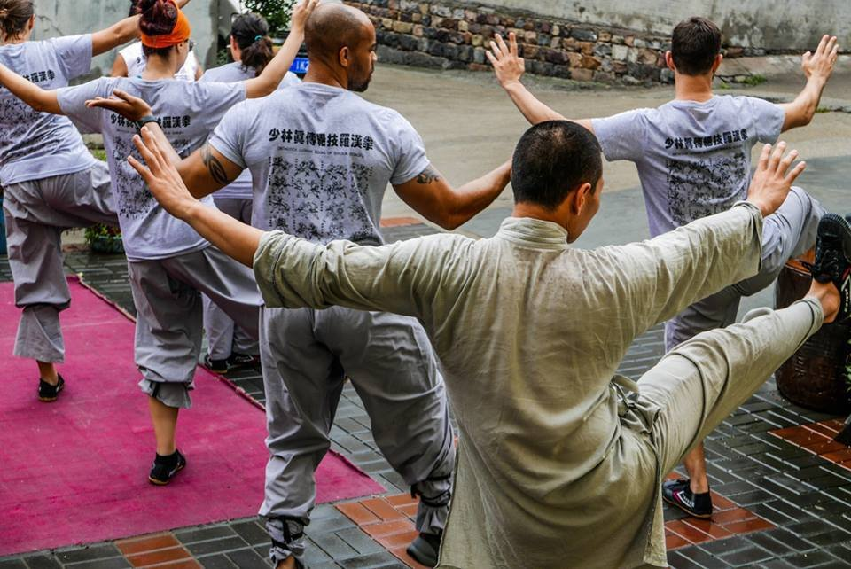
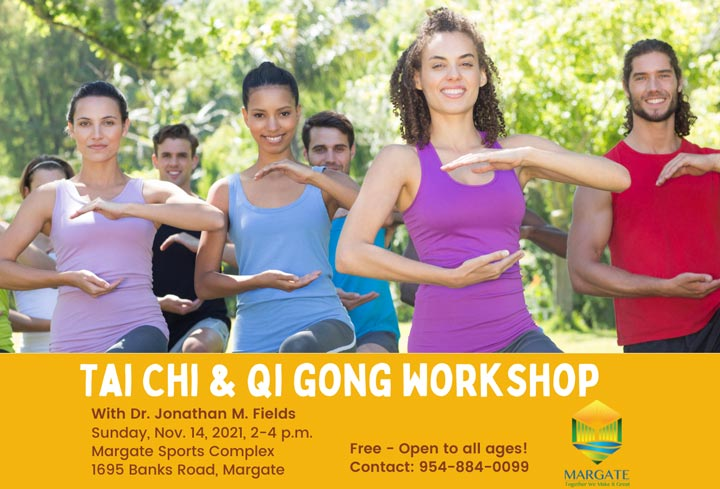

Acupuncture Coconut Creek · Coconut Creek
Qigong is a gentle practice of slow movement, relaxed breathing and calm focus. It is easy to learn, needs no equipment and can be done by kids, parents and grandparents together. Dr. Jonathan M. Fields has taught tai chi and qigong across Broward County, including in Coconut Creek, for more than twenty years.

Qigong movements are slow and simple. They can be done standing or sitting, and they adapt to stiff joints, low energy and limited balance. You do not need to be flexible or fit to start.
The NCCIH summarizes research suggesting tai chi and qigong may improve balance, reduce falls in older adults and improve quality of life for some people with chronic conditions. Reviews have also looked at blood pressure, mood and sleep (PMC3893407, PMC5861462). A Cochrane review examined these practices for specific conditions (PMC6360922). Many studies are small, so research is ongoing.
Slow breathing with a longer exhale is a simple way to settle down. Families use it before homework, after a long day or at bedtime. Kids often enjoy movements with names like "holding the moon" or "parting the clouds."
A short routine of five to ten minutes a day is a great start. Dr. Fields teaches a short sequence he calls the Nine Celestial Cycle, about nine minutes long, moving from head to toe.

Qigong complements acupuncture, Chinese herbal medicine and functional medicine. Treatment in the clinic plus practice at home tends to work well together.
Our Coconut Creek clinic is at 3720 Coconut Creek Pkwy, Suite B, close to the Sawgrass Expressway and an easy drive from Margate, Pompano Beach, Deerfield Beach and Lighthouse Point. Hours are Monday through Friday from 9am to 5pm. Families from around Lakewood Ranch, Butterfly World and the Promenade often stop in between school runs and errands. Call to book or to ask whether this treatment fits your situation. New patients should bring a medication and supplement list and wear clothing that rolls up easily. If you have recent imaging or lab work, bring that too. We are glad to answer questions about scheduling, cost and what to expect before you commit to anything.
Learn more
For readers who want the details: the research, the history and the reasoning behind how we work.
Stand tall together. Feet hip width apart, knees soft, shoulders relaxed. Take three slow breaths.
Lift the sky. Float the arms up as you breathe in and down as you breathe out. Do it eight times.
Swing like a willow. Turn gently side to side and let the arms swing loosely. Do it ten times.
Hold the ball. Round the arms in front of the chest as if hugging a big beach ball. Breathe slowly for one minute.
Shake it out. Gently bounce through the knees and shake the hands for thirty seconds.
Finish quietly. Hands on belly, three slow breaths.
Kids benefit from a short, playful practice that teaches body awareness and calm breathing. Keep it to a few minutes, use animal names and imagery, and practice together. Children with medical conditions should check with their pediatrician.
Stress, poor sleep and tight shoulders are common. A morning routine before the household wakes, or a few minutes after the kids are in bed, can become a reliable reset.
Balance training matters more with age. Practice near a sturdy chair or counter, keep movements small and work up gradually. Seated qigong is a good option for limited mobility.
Dr. Fields has trained in martial arts for decades, trained at the Shaolin Temple in China and has taught tai chi and qigong to community groups across South Florida.
Stop if you feel dizzy, short of breath or have pain. Check with your doctor if you have heart conditions, vertigo, recent surgery or severe osteoporosis.
Every medication and supplement. Including vitamins, protein powders and anything from a health food store.
Any pregnancy or chance of pregnancy. This changes which treatments and herbs are appropriate.
Allergies and sensitivities. Including to adhesives, oils or latex.
Recent procedures or injuries. Surgery, dental work, falls or new diagnoses.
What matters most to you. The goal you care about most keeps the plan focused.
Chest pain, trouble breathing, sudden weakness or numbness, high fever, severe abdominal pain or any symptom that is quickly getting worse needs medical care right away. Call 911 in an emergency.
Morning. Gentle standing practice wakes up the body and sets a calm tone for a busy day.
After school. A few minutes of movement and breathing can help kids shift from school to homework.
Evening. Slow breathing and seated movements help the household wind down before bed.
Attach practice to something you already do, like after brushing teeth or before breakfast. Keep it short at first. Practice together as a family so everyone reminds each other. Put a sticky note on the fridge with the routine.
Balance is a skill that improves with practice at any age. Kids gain body awareness. Adults keep steady as they age. Older adults may lower their risk of falls with regular balance training. Practice the weight shifting movements near a chair or counter for safety.
Balloon belly. Place hands on the belly and breathe in to fill it like a balloon, then breathe out slowly to let it shrink.
Smell the flower, blow the candle. Breathe in through the nose as if smelling a flower, then out through the mouth as if gently blowing out a candle.
Count the waves. Breathe in for four counts and out for six, like waves coming in and going out at the beach.
Tai chi is a martial art practiced slowly as moving meditation, with longer sequences of movements. Qigong is a broader family of health exercises, often simpler and more repetitive. Both share slow movement, relaxed breathing and calm attention. Many people start with qigong and later learn tai chi.
For people receiving acupuncture or herbal care, Dr. Fields often suggests a short daily routine. It gives you an active role in your health between visits, and it is something the whole family can share.
Our Coconut Creek clinic is convenient for families in Coconut Creek, Margate, Pompano Beach, Deerfield Beach, Parkland and Coral Springs. Call (954) 828-2620 to ask about appointment times that fit around school pickup and work.
Many families want care that looks at the whole person and explains things clearly. Integrative care combines traditional approaches with modern knowledge and works alongside your medical team. The goal is practical: feel better, understand why, and know what you can do at home.
Coconut Creek has many parks and green spaces. Practicing outside in the early morning or evening adds fresh air and a calming setting. In summer, avoid midday heat, bring water and choose shade.
Make a simple chart on the fridge. Each person checks a box for every day they practice. Note how you feel before and after. Kids often love the chart, and it keeps everyone consistent.
Many kids enjoy simple movements from about school age. Keep it short and fun.
No. Comfortable clothes and flat shoes or bare feet.
Call (954) 828-2620 to ask about current classes or private lessons.
No. It can be practiced simply as gentle exercise and breathing.
Yes. Qigong is a lovely shared activity. Grandparents can sit while kids stand, and everyone follows the same slow movements and breathing.
Many people feel calmer right away. Changes in balance and flexibility usually take a few weeks of regular practice.